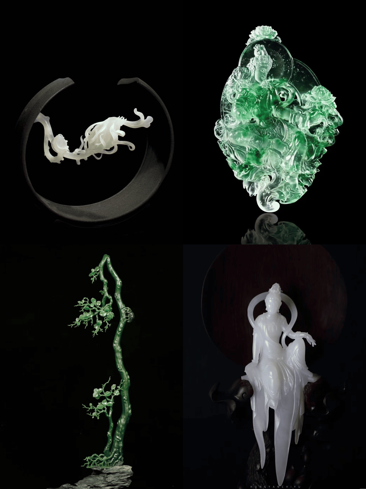

玉琢万象，韵载千秋
|  |
玉雕玉雕，恰似自然与匠心交织而成的梦幻诗篇，于指尖方寸间镌刻着华夏文明的深邃灵魂，是艺术殿堂中永不褪色的瑰宝。 寻玉之路，翻山越岭，只为觅得那质地温润、色泽纯正的璞玉原石。而后，雕刻大师凭借其精湛绝伦的技艺与超凡脱俗的艺术构思，依玉之天然纹理与形状，或精雕细琢出人物的细腻神态，眉眼间情感流转；或巧镂山水的磅礴气势，峰峦叠嶂、流水潺潺仿若真实之境；又或镌刻花鸟的灵动姿态，花瓣轻颤、鸟儿欲飞似可触可感。每一刀的雕琢，皆是对玉质之美的深度挖掘与升华，使其从一块顽石，蜕变成为价值连城、富有生命气息的艺术珍品，散发着柔和而迷人的光泽，令人叹为观止。它凝聚着岁月的沉淀与工匠的心血，是中华民族对美的不懈追求与智慧结晶。 拥有一尊玉雕，就如同将千年的历史文化底蕴与艺术魅力揽入怀中，让这份珍贵的遗产在时光长河中持续闪耀，为生活增添无尽的高雅情致与文化内涵，传承玉之精神，恒古流芳。 |